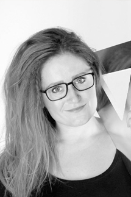

Rikke Hundebøl Christiansen

Født 1981.
Udlært frisør i Esbjerg 2002. Bestået med ros.
Førstehjælpskursus 1998.
Frisør/stylist på "Romeo og Julie" 1998.
Frisør/stylist på "Hamlet" 2000.
Kursus i special frisering af toupeér, parykker og extension 2001.
Frisør/stylist på "Les Miserables" 2001.
Kursus hos Søren Pjedsted ChaChaCha 2004.
Kursus/inspirationsaften ca. 10 gange årligt.
Ansat hos Avantgarde februar 2006.
Intens herre klippe kursus 2007.
Frisør/stylist på " The Producers " 2010.
Speciale i Brudefrisering.
Frisør/stylist på Den Ny Operas "Xerxes" på Det Kgl. Teater 2011.
Frisør/stylist på "7 Brude til 7 Brødre" 2011.
Frisør/stylist på diverse fotoshoot for "Marc Lauge" og "Freoli og Oli".
Frisør og koordinator på på diverse modeshows.
Klippe/farvekursus med Hasse Kliem 2013.